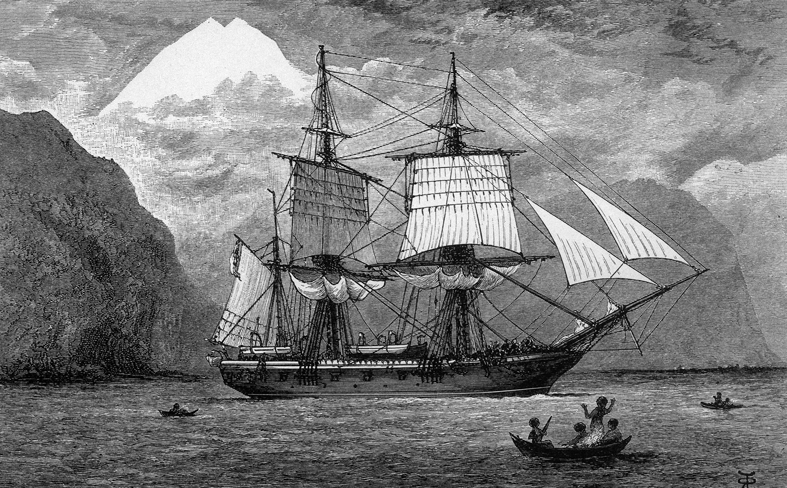

Charles Darwin, born in Shrewsbury England, set out on a voyage with his crew from England in December of 1831. It would be a very long sail on the infamous HMS Beagle ship.
Wasn't until September of 1835 that Darwin and his crew would reach the Galapagos Islands, about 600 miles off the coast of Ecuador, to perform their research on the island. The crew only spent 5 weeks on the island compared to a few years on other stops. But it would be the start of Darwin's core research on his theory of evolution and natural selection.

Darwin would observe and collect data on the different kinds of birds on the island. He preserved all the different birds he could find that inhabited the island and would bring it back to England to then study more deeply on them.
Darwin was not as interested into the finches of the birds until he got back to England to do more research and observation. This was only the beginning of his theory on evolution and natural selection.
When Darwin began his research, he had come to the realization that of the 13 different species of finches, they all evolved from one ancestor. This process is called adaptive radiation. It is the process of which an organisms diversify rapidly from an ancestral species into a multitude of new forms. Darwin's finches is a perfect example of that.